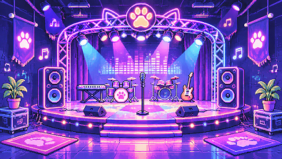

PIXEL PETS / BIG LITTLE SOUNDS 像素宠物 · 奇妙小声音
Good company.
Great little symphonies.
A seaside sunset, your favourite little friends, and a song only you can make.夕阳海滨、可爱的伙伴，还有一首由你创作的小小合奏。
SUNSET SESSIONS
VOL. 001 — SEASIDE PARK
Saved only in this browser · 草稿仅保存在当前浏览器

和伙伴们多待一会儿，听听他们的声音。
Track Studio 音轨编排 03 / 06
Tap a note to hear this pet and place it on the selected beat. · 点一个唱名试听，并放到选中的拍位。
Load or upload a sound to edit its waveform. · 加载或上传声音后可拖动波形两端。
Tap an instrument to preview its sound. · 点击乐器试听声音。
Release to hear the new pitch · 松开后试听新音高
Tap the beats. Find your groove.点选节拍，找到你的律动。
A soft echo follows each note. · 每个音符后会有轻微回声。
No wrong notes here.
Just happy little accidents.没有错音，只有可爱的意外。
Melody · 旋律
CLICK A NOTE TO COMPOSE · 点击音符编曲Select a pet on stage, then add one note per step. · 先选择舞台上的宠物，再逐格添加音符。
Chord Studio 和弦编排
Click a chord to change it. Turn on Chord Loop to hear it. · 点击和弦切换，打开循环即可试听。
A little inspiration Templates · 自动编曲
START WITH A MOOD · 选一种心情Auto Arrange loads a ready-made rhythm. Tweak every beat after.自动安排节奏后，仍可逐拍手动修改。
Made of pixels, paws & possibility.像素、爪印与无限可能。